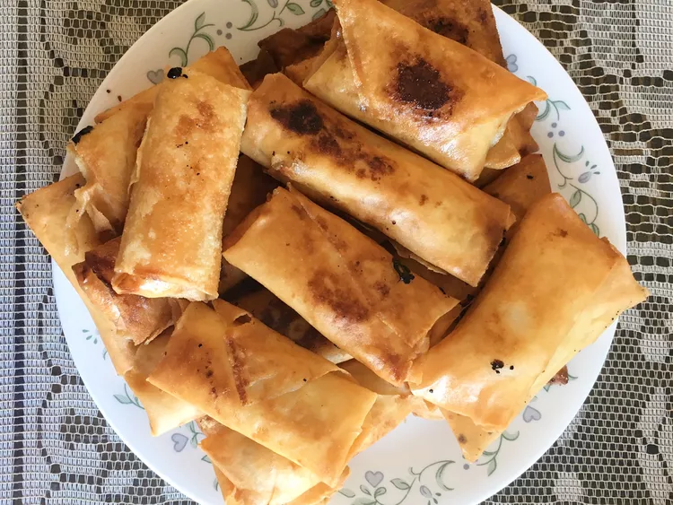

Go back to Home
Turon (Plantain Egg Rolls)

Description:
Filipino-style, fried plantain egg rolls have been my favorite dessert since I was a child. Crispy, sugary shells with soft and warm plantains inside. They are a breeze to make when you have everything set up in advance. They can be frozen in bulk and fried without any defrosting.
Ingredients
- 1 cup white sugar
- ¼ cup water
- 20 spring roll wrappers
- 5 plantains, peeled and quartered
- ⅓ cup brown sugar
- 1 ½ cups vegetable oil
Directions
- Put sugar and water in separate bowls.
Separate spring roll wrappers; stack. Peel plantains;
cut in half and then half again lengthwise.
- Place 1 wrapper on a clean work surface with 1 corner facing you.
Coat 1 plantain piece in sugar; place on wrapper 1 inch from corner
facing you. Fold corner over plantain; roll up halfway. Fold in 2
side corners; continue rolling until near the top. Moisten top corner with wet fingers;
finish rolling. Repeat with remaining wrappers.
- Heat oil in a deep-fryer or large saucepan to 350 degrees F (175 degrees C). Place egg rolls in a single layer;
fry until golden brown on the bottom, 2 to 3 minutes. Flip; sprinkle with brown sugar. Fry 2 to 3 minutes more.
Transfer egg rolls to a plate.
Bon Appetit!